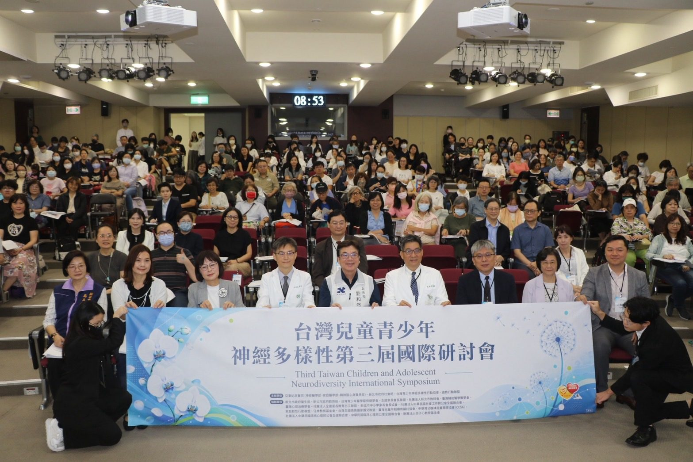
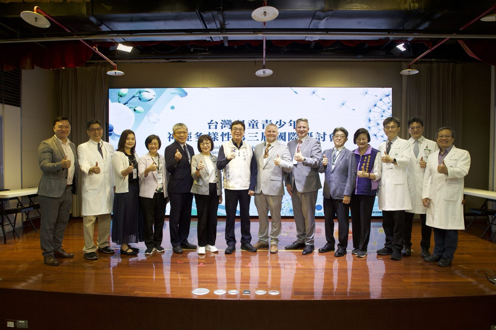
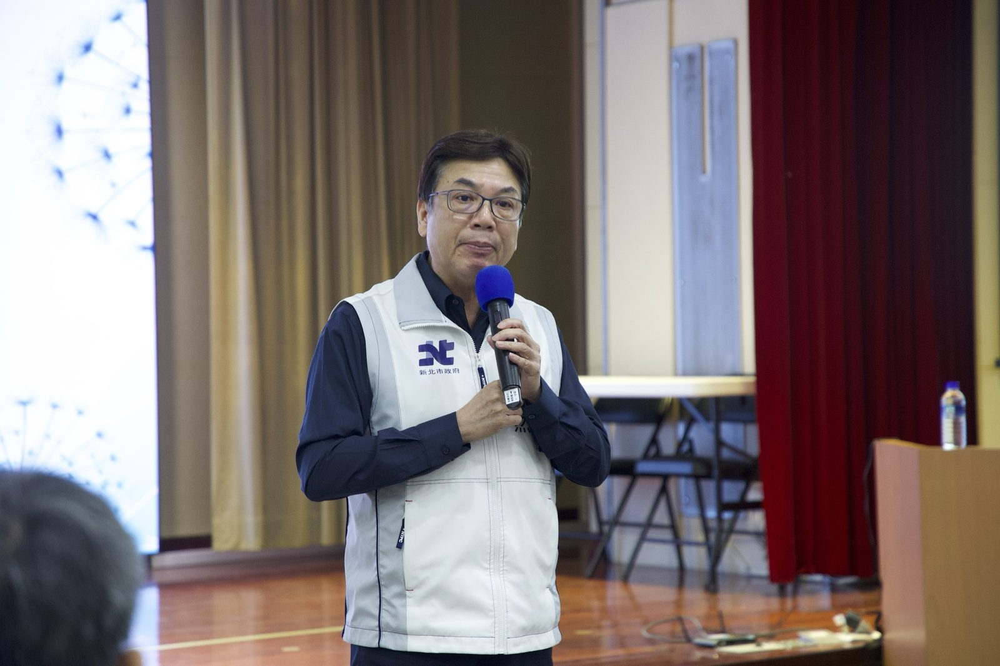
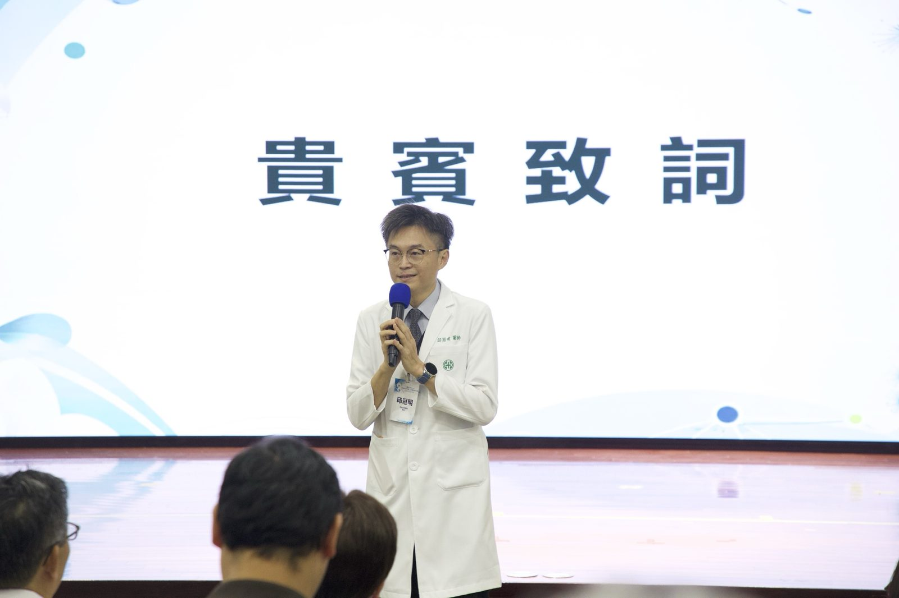
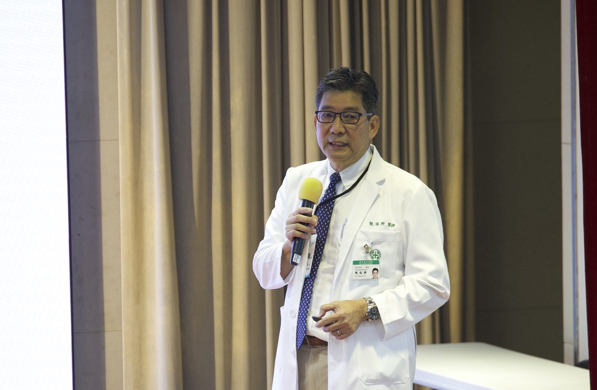
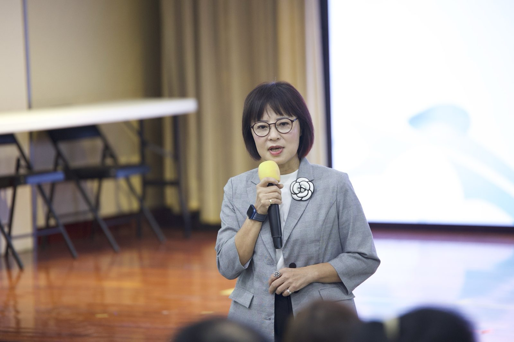
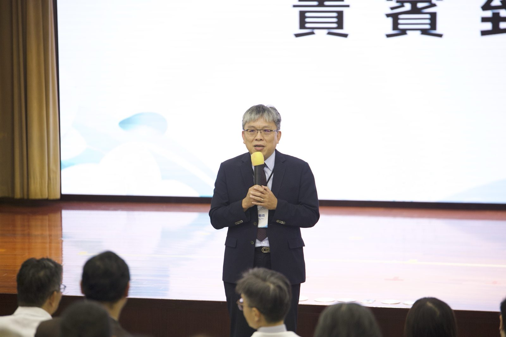
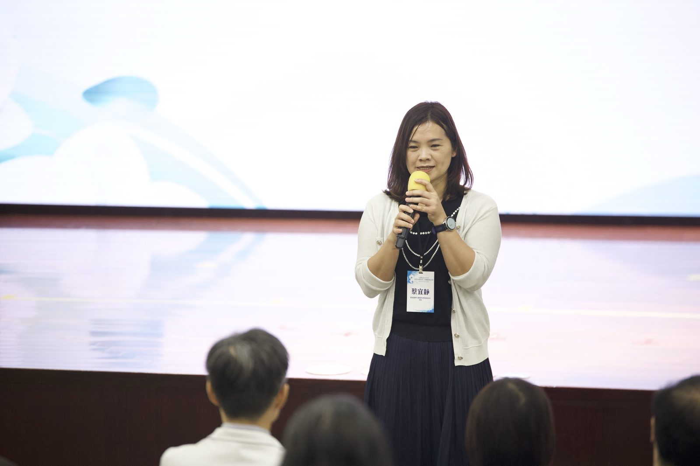

台美日專家齊聚亞東 第三屆神經多樣性國際研討會
孩子被看見了，制度接住了嗎？
國教盟期待：讓生活陪跑師與共照中心從新北走向全國
台灣兒童青少年神經多樣性第三屆國際研討會於2026年9月12日在亞東紀念醫院南棟14樓國際會議廳登場，由亞東紀念醫院、新北市政府社會局等六個單位共同主辦（國教行動聯盟為其一），台美日專家齊聚探討神經多樣性兒少的日常支持。

今日（9月12日），台灣兒童青少年神經多樣性第三屆國際研討會在新北市亞東紀念醫院登場，由亞東紀念醫院、新北市政府社會局、台灣青少年神經多樣性行動協會與國教行動聯盟（簡稱「國教盟」）共同主辦，台灣、美國、日本講者齊聚九場專題演講，衛福部心理健康司長陳柏熹、教育部學生事務及特教司長蔡宜靜等官員與會8。國教盟理事長王瀚陽在手冊前言指出：「孩子『被看見』的速度，已遠超越制度『接住』他們的能力。」國教盟期待，新北市今日宣布的「生活陪跑師」制度與亞東的兒少神經多樣性共照中心模式，能成為中央接手、推向全國的起點。
新北宣布推動「生活陪跑師」 官員齊聚亞東

新北市副市長劉和然表示：「新北市要推動『生活陪跑師』制度，結合心理師、社工、醫療、教育及民間團體資源，以『我陪著你跑』的觀念，陪伴每一位青少年穩定成長。」（引自新北市政府社會局新聞稿）8

亞東紀念醫院院長邱冠明表示：「用包容取代苛責、用理解代替誤解，『不在爭第一，要確保每個孩子的唯一！』」（引自新北市政府社會局新聞稿）邱冠明也提到，亞東與新北市府合作成立首間「兒少神經多樣性共照示範中心」（引自新北市政府社會局新聞稿）8。到場者另有立法委員林月琴，新北市社會局長李美珍、衛生局長陳潤秋；本盟理事長王瀚陽以共同主辦單位身分出席8。

辨識率在提升，接住的制度卻沒跟上
根據美國CDC 2025年報告，2022年美國8歲兒童自閉症類群障礙（ASD）盛行率約1/31（3.2%）1；世界衛生組織（WHO）現行估計，2021年全球約1/127人有自閉症2。台灣方面，教育部特教通報網112學年度資料顯示，全國國小自閉症學生共11,103人4（不含國中、高中）。這些數字反映的是辨識率提升、篩檢與診斷標準逐步跟上國際腳步，而非發生率暴增。
台灣同樣呈現看得見卻接不住的落差：衛福部心理健康司衛教頁面指出，台灣ADHD盛行率9.02%，但僅1.62%的人接受醫療診斷3。國教盟認為，這反映的是發現得晚、發現得少；本次研討會講者也強調「及早辨識與支持」的重要性。
從診斷到日常：三位講者這樣說

亞東紀念醫院兒少神經多樣性共照中心主任甄瑞興指出：「神經多樣性不是一個醫學臨床診斷，而是一個涵蓋因大腦發育差異而有不同大腦運作方式的自閉症、ADHD、閱讀障礙、發展性協調障礙、妥瑞氏症等的統稱。」（引自新北市政府社會局新聞稿）8亞東紀念醫院兒童發展中心主任林育如提醒：「同樣的診斷在不同孩子身上，也可能呈現完全不同的特質與需求。」（引自新北市政府社會局新聞稿）8美國Telos北校區執行總監Barry Fell則分享，生活陪跑並非取代治療，而是協助青少年將情緒調節、時間管理、溝通及責任感等能力實際運用於日常生活（引自新北市政府社會局新聞稿）8。他在研討會結語以英語總結：「Healthy adults are not born. They are intentionally developed.」（健康的成人不是天生的，而是被刻意栽培而成的）（Barry Fell 於研討會結語，現場錄音）

國際上，生活教練已有雛形，但定位各不相同
在美國，Telos的青年轉銜方案Telos U為每位學員配一名Life Skills Coach6，協助執行功能、社交技巧與生活作息——屬私部門實務，非政府政策。在英國，NHS England承諾至2023/24年度，最複雜需求的自閉症或學習障礙兒少將配有指定keyworker7，但僅限複雜個案，非普及支持。在日本，文部科學省2022年調查顯示，公立中小學普通班級約8.8%學生可能有發展障礙特質，較2012年前次調查6.5%上升2.3個百分點5；該調查並指出，增加主要反映認知度提高，而非發生率上升。日本東京國際基督教大學社區心理學榮譽教授笹尾敏明表示：「不能只從個人診斷理解，也應檢視家庭、學校與社區環境是否具備足夠的彈性與支持。」（引自新北市政府社會局新聞稿）8可借鏡的不是哪國已有一模一樣的「生活陪跑師」，而是三國都已在制度裡，為神經多樣性兒少留出「日常」的位置。


照片：主辦單位提供
國教盟連辦三年 自2025年起倡議「台灣版生活導師」
國教盟連續三年主辦或共同主辦神經多樣性國際研討會，自2025年起倡議建立「台灣版生活導師」制度。理事長王瀚陽在手冊前言寫道，肯認差異，不代表否認困難，這群孩子真正需要的，是從「被看見」跨越到「被看懂」——需要能看懂孩子的老師、獲得支持的家長、願意接納的同儕，以及能彈性回應需求的制度。
國教盟對共照中心與生活陪跑師的三點期待
根據研討會大會手冊，共同主辦單位台灣青少年神經多樣性行動協會與新北市政府社會局，已自2026年9月14日起推動「全國神經多樣性生活陪跑師基礎概念訓練計畫」；國教盟期待中央部會接手，把地方與民間的先行經驗制度化：
- 一、期待教育部與衛福部以新北市今日宣布的「生活陪跑師」制度，以及協會與新北市政府社會局已啟動的全國訓練計畫為基礎，在2027學年度前形成培訓、認證與經費的全國方案，並於2026年底前先公布規劃時程。
- 二、期待教育部把神經多樣性納入教師在職研習主題，自116學年度（2027年8月）起有制度化的研習時數，讓看得懂的老師不再靠個人熱情。
- 三、期待衛福部與地方政府在2027年底前提出擴點規劃，讓亞東與新北市府合作的共照中心模式，擴及六都以上。
王瀚陽在大會手冊前言寫道，願這場研討會成為更多「看得懂的大人」的起點，陪每一個孩子在理解與支持中，找到屬於自己的成長方式。
—— 國教行動聯盟 理事長 王瀚陽
從「被看見」到「被看懂」，需要的不只是診斷，而是一套接得住孩子的日常制度。國教盟願與亞東紀念醫院、新北市政府與台灣青少年神經多樣性行動協會一起，讓今天的研討會成為制度的起點。
新聞聯絡人
- 國教行動聯盟理事長 王瀚陽 電話 0983-097-165
參考資料｜供查核及媒體參考
- Shaw, K. A., Williams, S., Patrick, M. E., et al. (2025, April 17). Autism spectrum disorder among children aged 8 years — Autism and Developmental Disabilities Monitoring Network, 16 sites, United States, 2022. MMWR Surveillance Summaries, 74(SS-2), 1–22. https://www.cdc.gov/mmwr/volumes/74/ss/ss7402a1.htm
- World Health Organization. (2025, September 17). Autism [Fact sheet]. https://www.who.int/news-room/fact-sheets/detail/autism-spectrum-disorders
- 衛生福利部心理健康司（2024年5月24日）。〈ADHD現況〉。衛生福利部。https://dep.mohw.gov.tw/DOMHAOH/cp-4911-76241-107.html
- 教育部特殊教育通報網（2023年10月20日）。〈112學年度一般學校各縣市特教類別學生數統計（身障）〉。https://www.set.edu.tw/Stastic_Spc/sta2/doc/stuA_city_spckind_B/stuA_city_spckind_B_20231020.asp
- 文部科學省（2022年12月13日）。〈通常の学級に在籍する特別な教育的支援を必要とする児童生徒に関する調査結果について〉。https://www.mext.go.jp/b_menu/houdou/2022/1421569_00005.htm （文科省公告頁未列出該數字、原始PDF連結已失效；8.8%經LITALICO発達ナビ與日本經濟新聞交叉確認一致）
- Telos. (n.d.). Telos U [Program page]. https://telos.org/boys-residential-treatment/telos-u/；Life skills [Services page]. https://telos.org/services/life-skills/
- NHS England. (n.d.). Children and young people keyworkers. https://www.england.nhs.uk/learning-disabilities/care/children-young-people/keyworkers/
- 新北市政府社會局（2026年9月12日）。〈支持差異性 新北市要推動「生活陪跑師」〉。新北市政府市政新聞。https://www.ntpc.gov.tw/ch/home.jsp?id=e8ca970cde5c00e1&dataserno=cad9ae8956c4265586261e53687aa1cd
本頁為 2026 年 9 月 12 日對外發布文件之官網存查版，內容與發布版一致、逐字照登、未經改寫。媒體採訪請聯繫上方新聞聯絡人。